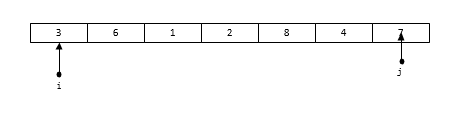

在上一篇中，回顾了一下针对选择排序的优化算法——堆排序。堆排序的时间复杂度为O(nlogn)，而快速排序的时间复杂度也是O(nlogn)。但是快速排序在同为O(n*logn)的排序算法中，效率也是相对较高的，而且快速排序使用了算法中一个十分经典的思想——分治法；因此掌握快速排序还是很有必要的。
快速排序的基本思想如下：
- 在一组无序元素中，找到一个数作为基准数。
- 将大于它的数全部移动到它的右侧，小于它的全部移动到右侧。
- 在分成的两个区中，再次重复1到2 的步骤，直到所有的数全部有序
下面还是来看一个例子
[3,6,1,2,8,4,7]
首先选取一个基准数，一般选择序列最左侧的数为基准数，也就是3，将小于3的数移动到3的左边，大于3的移动到3的右边，得到如下的序列
[2,1,3,6,8,4,7]
接着针对左侧的[2, 1] 这个序列和 [6, 8, ,4, 7]这两个序列再次执行这种操作，直到所有的数都变为有序为止。
知道了具体的思路下面就是写算法了。
1 | void QSort(int a[], int n) |
这里定义了一个函数作为快速排序的函数，函数需要传入序列的首地址以及序列中间元素的长度。在排序函数中只需要关注如何进行调整即可。
这里进行了一个判断，当调整函数返回-1时表示不需要调整，也就是说此时已经都是有序的了，这个时候就不需要调整了。
程序的基本框架已经完成了，剩下的就是如何编写调整函数了。调整的算法如下:
首先定义两个指针，指向最右侧和最左侧，最左侧指针指向基准数所在位置

先从右往左扫描，当发现右侧数小于基准值时，将基准值位置的数替换为该数，并且立刻从左往右扫描，直到找到一个数大于基准值，再次进行替换

接着再次从右往左扫描，直到找到小于基准数的值；并再次改变扫描顺序，直到调整完毕

最后直到两个指针重合，此时重合的位置就是基准值所在位置
根据这个思路，可以编写如下代码
1 | int QuickSort(int a[], int nLow, int nHigh) |
到此已经完成了快速排序的算法编写了。
在有大量的数据需要进行排序时快速排序的效果比较好，如果数据量小，或者排序的序列已经是一个逆序的有序序列，它退化成O(n^2)。
快速排序是一个不稳定的排序算法。